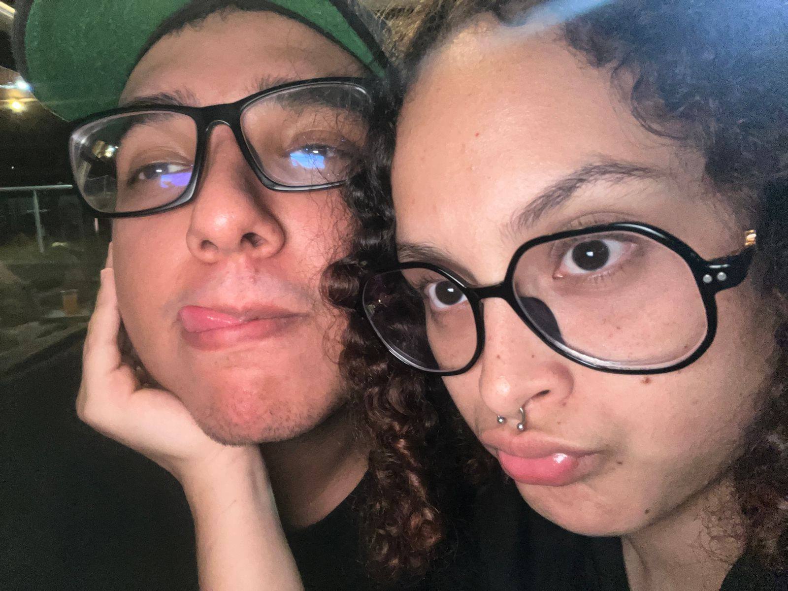
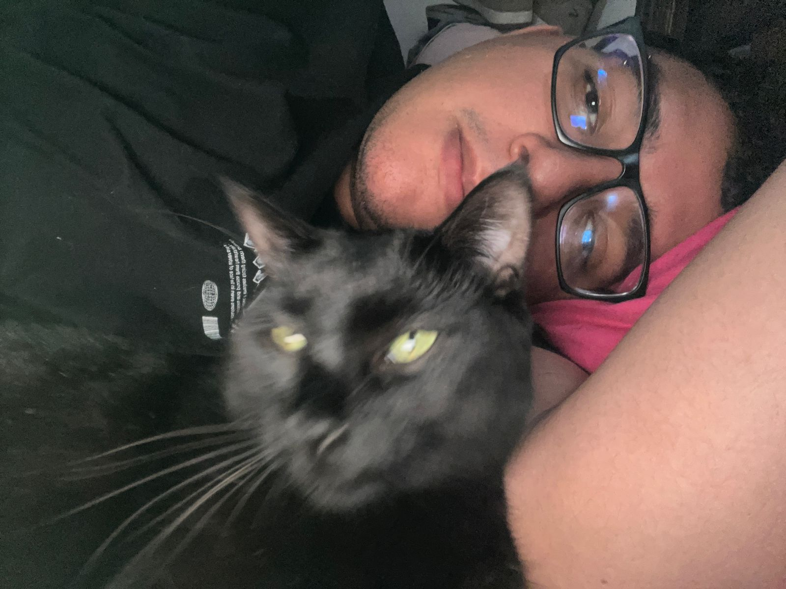
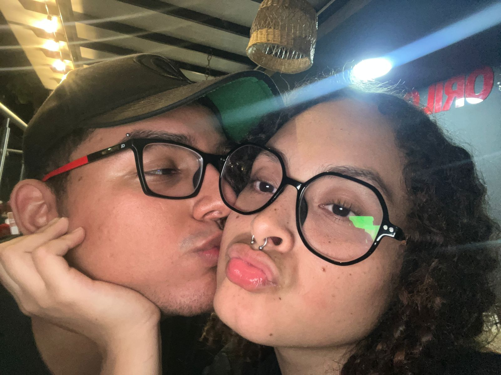
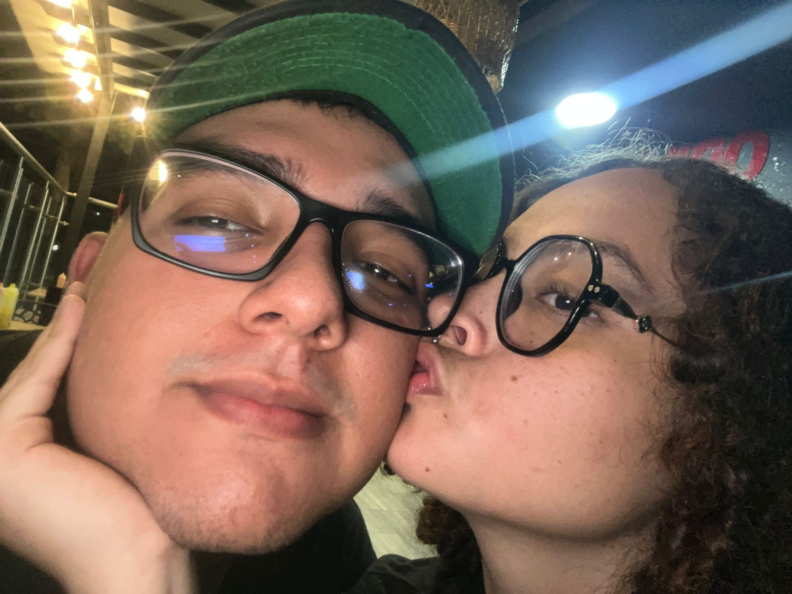

Un Mensaje Especial
Hola amor tu sabes que yo no soy muy bueno con las palabras pero siempre lo intento por que se lo mucho que te gustan los mensajes bonitos la verdad es que mis sentimientos asi ti siempre han sido muy sinceros eres una persona que desde el primer momento que conoci sabia que era especial tu forma de ser , tu forma de expresarte , tu inteligencia ,tus datos curiosos son algo que la verdad siempre me han gustado mucho por que siento que nos entendemos muy bien y eso es lo que mas me gusta de ti tu forma de ser es unica y yo la verdad no me imagino siendo o estando feliz con otra persona que no seas tu,siento que todo tu esta hecho para mi a lo largo de mi vida eh conocido personas que simplemente no me llenan o no nos terminamos de entender y siento que finjo ser algo que no soy pero contigo puedo ser yo mismo decir mis chiste absurdos que solo un autista con problemas los entenderia y tu me entiendes no estoy diciendo que seas una persona autista con problemas pero me entiendes, yo siento que contigo puedo hablar de todo y me vas a entender, yo se que querias depronto un carta hecha a papel y lapiz pero no me salen las palabras la verdad necesitaria un libro para escribir todo lo que siento por ti y espero que nunca sientas que no te amo por que a lo largo de este año conociendos eh comprendido que las personas que te hacen mas feliz pueden vivir a 65 kilometros de distancia de ti pero la verdad es algo que no me importa (eso no significa que me voy a ir a vivir a ese pueblucho), la verdad la vida es un poco rara por que nunca pense que mi amor de verdad fuera a estar en buga te amo y espero que nunca se te olvide siempre tuyo angel diaz
a continuacion canciones que me recuerdan a ti ......
Canciones que me recuerdan a ti o que cuando escucho pienso en ti
Good looking
Where is my mind?(no se muy bien si es de amor pero me recuerda a ti)
La luna y tu mirada
Que hermosa noche
Deseo de vivir (esta la tenemos que bailar)
Realizame mis sueños del binomio de oro
Amor sin clausulas , kase o
This charming man , the smiths/p>
Kathys song ,simon& garfunkel
Ebrio de amor , efecto elegante
Una Foto para Recordarte
   Cosas que me gustan de ti
tu increible forma de ser
tu increible sentido del humor
tu carisma
tu forma de ver las cosas
tu forma de ser conmigo
tu sonrisa que me gusta mucho
tu risa
en la forma en la que te expresas
tus datos curiosos
tu increible capacidad de memorisar cosas radom
tus gustos
la forma en la que amas
tu ojos lindos
tu perfume que me mata
la forma en la duermes
me gusta en la forma que quieres que todo salga perfefcto
tu pelo risado
tus labios suaves
tu cuerpo de reloj
tus pecas
conclusion
Para cocluir esto quiero decirte que te amo y siento que cada vez que nos vemos te lo demuestro y contigo siento que puedo ser empalagoso y ser yo mismo y expresar mi amor, cuanto sientas que no te estoy amando lo suficiente me lo puedes decir que yo hare todo lo posible para recalcarte lo mucho que te amo y cuando sientas que te hundes en la soledad llamame y nadare hasta el fondo para salvarte y la verdad me siento muy afortunado al haber encontrado una mujer como tu que me hace sentir amado nunca encontre un trebol de cuatro hojas pero te encontre a ti supongo que la suerte llega de formas distintas (yo soy todo un romantico lo se )por ultimo no me aguante para mandarte eso y espero que para tu cumpleaños todo salga y va a salir super bien y va a ser el mejor cumpleños del mundo o bueno almenos top 3.